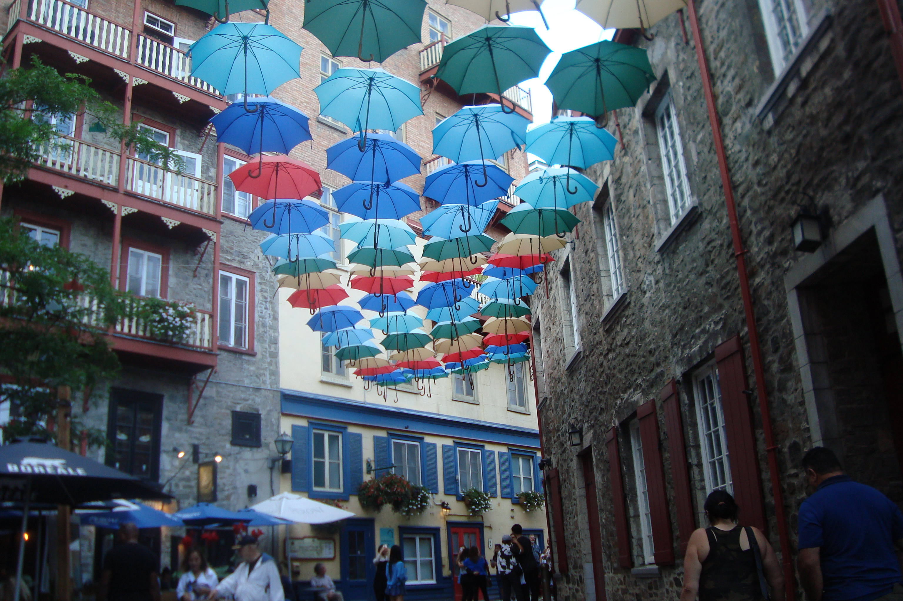
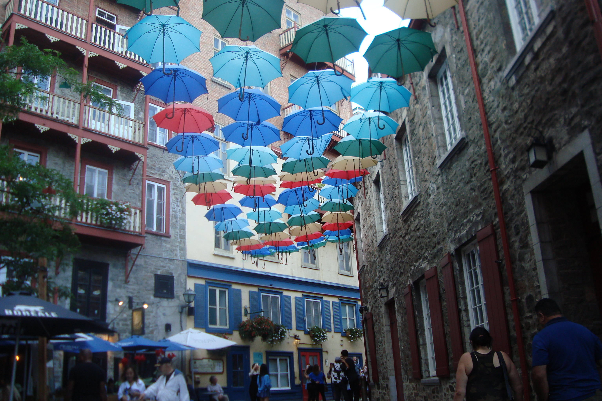

Hi there! I’m Bela Damani, a second-year Global Business and Digital Arts student at the University of Waterloo, welcome to my portfolio site! I have a large passion for design, storytelling, and building something of my own. My ultimate goal is to carve out a path where I can be my own boss, combining my creative vision with entrepreneurial spirit to create work that leaves a lasting impact. In my spare time, I love immersing myself in film. For me, movies are more than entertainment, they’re a lens through which I explore culture, emotion, and the power of storytelling. They fuel my creativity and help me approach my own projects with a fresh perspective. As I continue to grow, I strive to connect my love for design, film, and storytelling with the technical expertise I’ve developed. Every step I take is guided by a vision to create something meaningful while staying true to myself and my passions
| Skill | Proficiency |
|---|---|
| UX Design | Advanced |
| HTML & CSS | Intermediate |
| Photography | Advanced |

During the summer of 2024, I had the opportunity to work as a Digital Delivery Intern at Compass Digital, an experience that played a pivotal role in shaping my skills and career aspirations. In this role, I collaborated with cross-functional teams to design and implement user-focused digital solutions, sharpening my technical expertise and problem-solving abilities. At Compass Digital, I was immersed in the fast-paced world of digital delivery, where I contributed to projects that improved user experience and streamlined processes. From working on interface designs to ensuring seamless functionality, I gained hands-on experience in bridging creativity and technology to deliver impactful results. This experience not only deepened my passion for UX design but also reinforced my ability to adapt, learn quickly, and thrive in collaborative environments. It solidified my vision to continue pursuing opportunities where I can innovate and create meaningful digital experiences.


 


Poster (1/2) of the poster assigement of course GBDA 101.

Poster (2/2) of the poster assigement of course GBDA 101.

A Huarya Roadster poster made using photos from the Canadian National Autoshow.